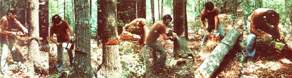

Mother's Guide To Mid-Sized Chain Saws
Comparison chart of middle-weight chain saws and a guide to felling a tree.
By the Mother Earth News editors
November/December 1979
More and more people-spurred on by the upward march of oil prices-are turning to wood as a source of heat. Fortunately, chain saw manufacturers have responded to the increased demand for their products-which has resulted from the new popularity of wood-burning with technically advanced and vastly expanded model lines of these powered wood-cutting tools.
In fact, there's been so much growth in the chain saw industry over the past five years that it would be impossible for us to include all brands and models in one article! Consequently, we've limited our survey to saws of the size range that MOTHER's readers are likely to find most valuable: those tools with engine displacements of between 2.5 and 5.0 cubic inches.
MOTHER feels that folks where heating their homes with wood-and probably cutting at least two cords of fuel each winter- shouldn't even consider buying a saw smaller than 2.5 cubic inches. The advantages of a medium displacement log slicer-to a person who actually heats much of his or her home with hand-cut wood- over-shadow the weight and dollar savings possible with a smaller saw.
In the first place, a substantial- sized cutter will drop trees more easily and quickly than a mini saw, and it will outlast one of the tiny timber choppers, too. Furthermore, because the more powerful tool does the job with less effort, it also puts less strain on its operator. In addition, many experienced log loppers feel that bigger chain saws are actually safer than are the smaller units, since additional horsepower reduces the possibility of the chain's bogging or jamming ... two frequent causes of kickback.
However, the number-on cause of chain saw accidents is fatigue, so don't pick a saw that's too heavy for you to handle (or work too long without a breather). A basic guideline for choosing a saw of appropriate heft is to buy no more than about one pound of machine for each ten pounds of your body weight ... but, of course, allow for your physical condition as well. Note, too, that some weights given in the accompanying chart are for the saw's power unit alone, while others include the bar and chain ... and many don't take into account the additional weight which will be added when the saw is filled with gasoline and oil. Moreover, the tool's balance-which will change with varying fuel levels-influences how the poundage actually feels when you're sawing wood.
Consequently, the best way to select a saw is to try out a variety of models first. Putting the blade to a log is the only way to know how the weight, balance, vibration, etc. of a particular tool will affect you. What's more, it's during such a trial process that you'll find out the most important thing you need to know before buying: the quality of the saw's dealer... and his or her ability to back up the product.
|
 STAFF PHOTOS One of MOTHER's lumberjacks shows off a variety of mid-sized chain saws while demonstrating the technique for felling and sectioning an oak. LEFT TO RIGHT: The woodsman makes his first cut (with a Stihl 031) perpendicular to?and on the same side as?the direction he wants the tree to fall ... slicing downward at a 300 angle for 113 of the oak's diameter. Then (using a Husquarna 61) our man cuts straight in to meet the previous incision and form a notch. Next, having planned an escape route 450 away from the line of fall, the saw man starts the felling cut (employing a Homelite XL 12). This slice angles downward toward a point two inches above the parallel notch cut, but stops three inches short of intersection. Now our logger moves to the escape?route side of the trunk and works the felling cut in (with a McCulloch 610) until the ""spine"" is too weak to support the tree. Timber! Once felled, the tree must be sectioned ... or ""bucked"", in logging jargon. Here our timber chopper bucks a log suspended at both ends by first sawing into the wood from above (utilizing an Echo 500 VL) and then completing the cut from below (with a Poulan 306) ... so that the wood falls neatly away from the saw's blade. |
 |
|